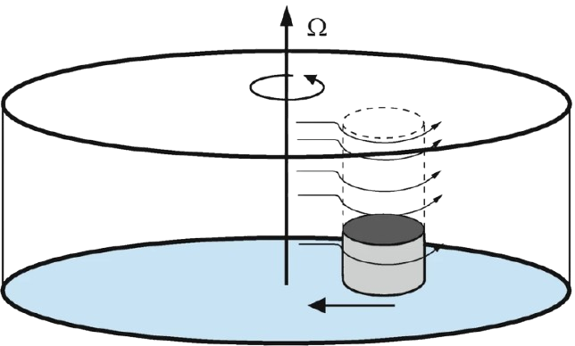
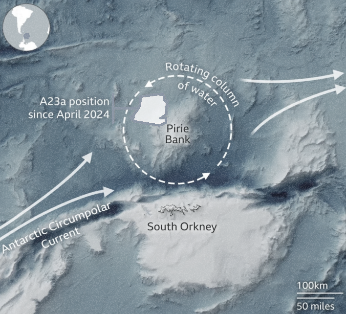

The same phenomenon occurs in planetary atmospheres; this rotating tank is basically a mini-version of our the atmosphere. Where there are obstacles — like mountains, air has an easier time flowing around the mountain instead of over it

The Taylor column, illustrating the Taylor-Proudman theorem in a rapidly rotating fluid

After breaking free, world's largest iceberg is stuck spinning in circles
1Ghil, M., Simonnet, E. (2020). Geophysical Fluid Dynamics, Nonautonomous Dynamical Systems, and the Climate Sciences.
2Nicole Sharp - August 21, 2024. Trapped in a Taylor Column.